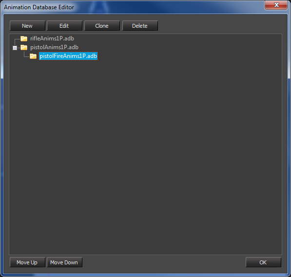

Обзор

Редактор базы данных анимации используется для редактирования правил, определяющих, в каком режиме ADB файл фрагменты заканчиваются. Его также можно использовать для создания новых файлов ADB.
Доступ к нему можно получить из Файл меню.